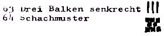

Nascom Journal |
1/81 |
Mit dem Programm ergeben sich folgende Möglichkeiten:
Ein Programmierbeispiel:
Mit diesem Programm würden drei Buchstaben des Alphabets in Grafik dargestellt.
Es lassen sich mit dem Programm 40 Grossbuchstaben oder Zeichen auf dem Bildschirm abbilden.
Die Buchstaben oder Zeichen können Sie nach eigenem Geschmack leicht ändern oder neu gestalten. Im Listing der Tabelle entspricht jede Zeile einem Buchstaben oder Zeichen.
0456 bis 04E7 enthält die Zahlen 1 bis 9 , wobei jede Ziffer, genau wie Buchstaben oder Zeichen, 18 Speicherplätze beansprucht. Dabei bedeutet 05 eine einzeilige Fläche, 85 ist zweizeilig, und 20 bedeutet „Space“.
In der Tabelle besetzen weiterhin die Buchstaben A bis Z den Platz von 0567 bis 074A. Die übrigen Speicherplätze sind durch zum Teil modifizierte ASCII Zeichen belegt; es können aber auch unprogrammierte Zeichen dargestellt werden, indem man Codes wie z.B. 20 oder 76 eingibt, die nicht in der Tabelle enthalten sind, die aber interessante Zufallsgrafik erzeugen.
Weitere Zeichen der Tabelle:
|  |
| Seite 4 von 16 |
|---|